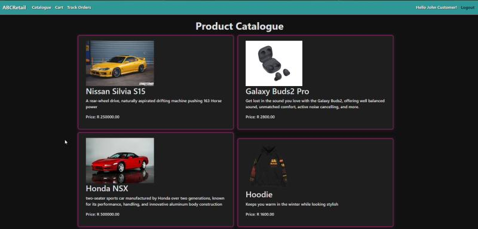

Description
This project was designed as a cloud-integrated ecommerce platform, built with ASP.NET MVC and deployed on Microsoft Azure. The system allowed customers to browse products, add items to their cart, and complete purchases, while administrators could manage inventory, categories, and user accounts.
This project made use of a variety of Azure services integrated into the solution. It demonstrated how multiple cloud components can work together to deliver scalability, reliability, and secure data handling. Role-based authentication was implemented using ASP Identity, ensuring that customers and admins had distinct access levels.
The project served as a practical exercise in combining web development with cloud architecture, showing how enterprise-style ecommerce systems can be structured for real-world use.
Unfortunately, as this was made as a university project, the application is no longer hosted and available to view. However, a video of the application running can be found here.
Technologies Used
- ASP.NET MVC -
Core framework for building the application. - Microsoft Azure App Services -
Hosting and deployment of the web app. - Microsoft Azure Queues -
Asynchronous task handling. - Microsoft Azure Tables -
NoSQL storage for lightweight data. - Microsoft Azure SQL Database -
Relational data storage for products, orders, and users. - Microsoft Azure Blobs -
Image storage for product images - Microsoft Azure Files -
File storage for business contract - ASP Identity -
Role-based authentication and user management
Purpose
The project was built to simulate a real-world ecommerce workflow and demonstrate how cloud services can support scalability and reliability.
- For customers:
Provided a secure, user-friendly platform to browse and purchase products. - For administrators:
Enabled efficient inventory and user management with role-based access. - For developers (learning outcome):
Showed how to integrate multiple Azure services into a cohesive system, preparing for enterprise-level cloud applications.